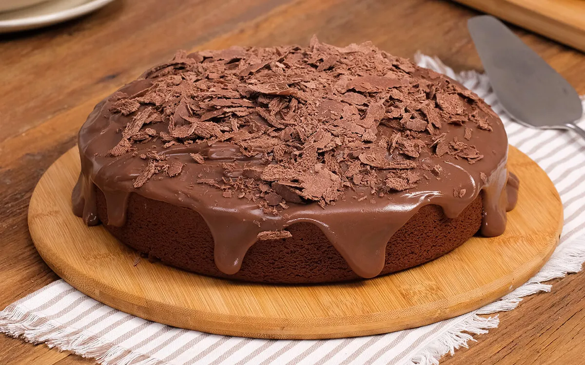

ingredientes
- 2 ovos
- 2 xícaras de açúcar
- 2 xícaras de chá de farinha de trigo
- 1 xícara de chá de chocolate em pó
- 2 colheres de sopa de margarina com sal
- 1 colher de sopa de fermento em pó
- 1 pitada de sal
- 1 xícara de chá de leite
cobertura de chocolate
- 2 xícaras chá de leite
- 1 xícara chá de chocolate em pó
- 1 colher de margarina com sal
- 1 xícara de açúcar
modo de preparo
- em um recipiente, bata os ovos, o açúcar a margarina ate formar um creme
- com uma panela, adicione a farinha de trigo aos poucos, depois o chocolate em pó com a margarina e asse em um forno médio-alto 200°c, por 40 minuto
- desforme ainda quente
para a cobertura de chocliate
- em uma panela, leve todos os ingredientes ao fogo até levar a fervura
- despeja ainda quente em cima do bolo